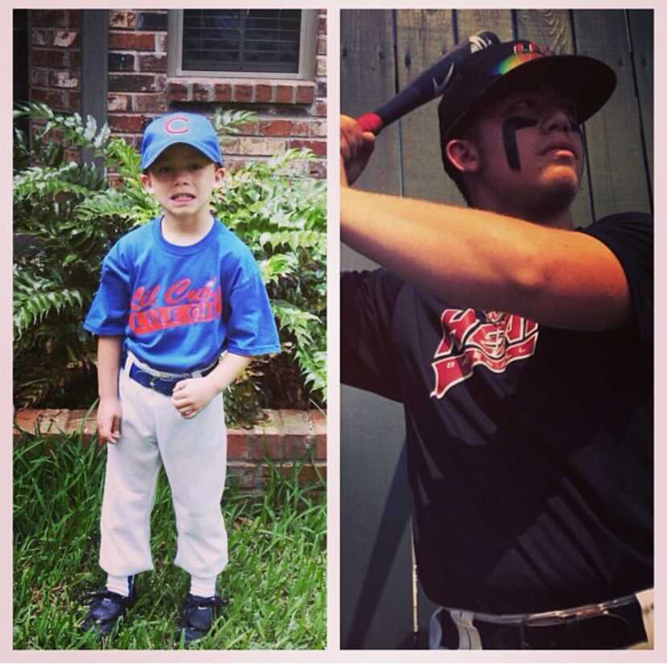

Young Chase
Hi my name Chase Lee Kilpatrick, I grew up in a small town called Fairfield Texas in the middle of nowhere. I grew up playing Baseball which was my passion i enjoyed being able to travel the country playing the game I loved, I would be in a differnt town every weekend.

Oil Field
I first attended Tulsa Welding and Technoly Center in Houston to get a certification in welding and learn to to weld. Once i graduated from that program I started working in the Oil field living on the road and working long hours.Once you work so many hours and so many years in the Oilfield you just get tired and you realize it might not be for you .
Once I met my wife i started to get an intrest into the tech indursty. Once I found out that this is what i wanted there was no stopping me i found a Full stack course and went for it and I'm enjoying every moment of it .